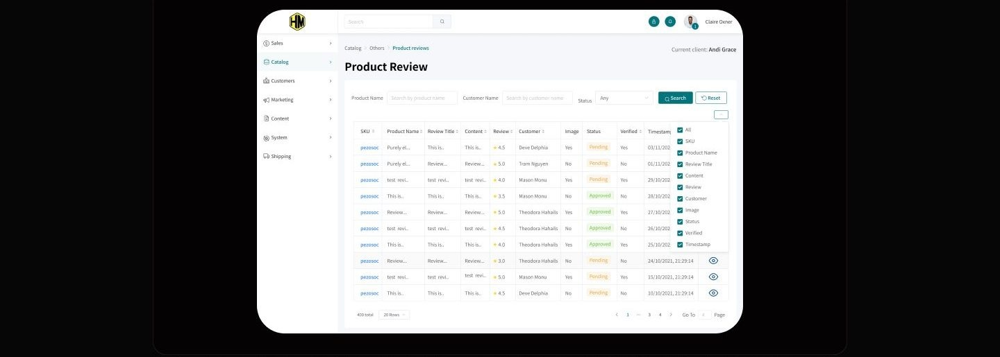
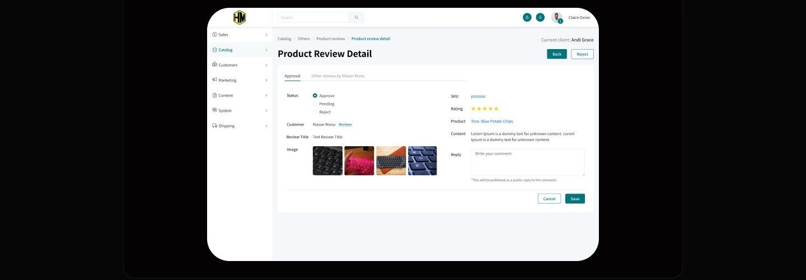
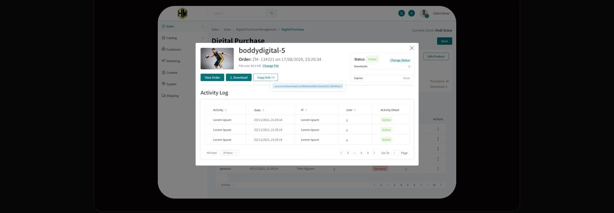
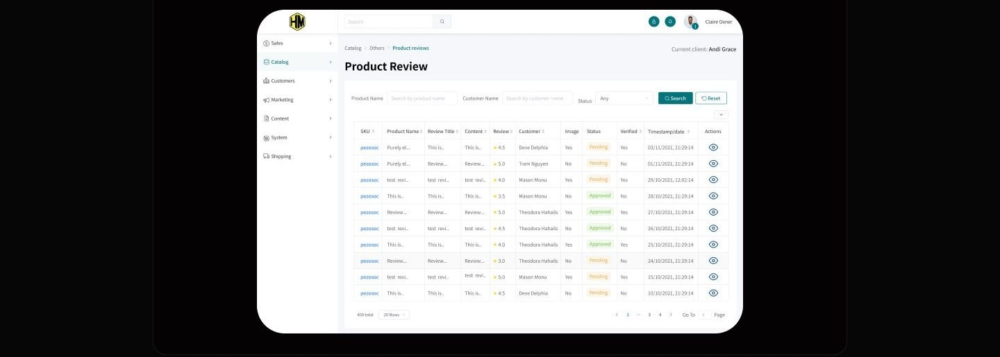
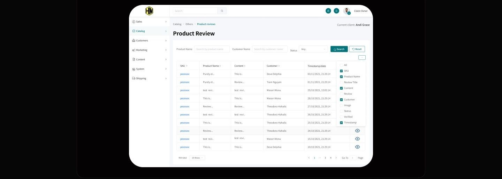
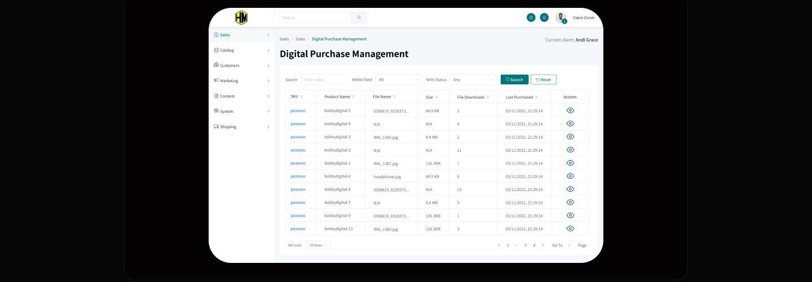
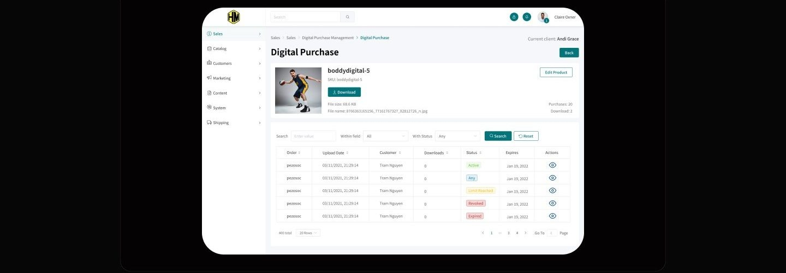

Case study 01 of 11 · E-commerce admin · Independent concept project
HM
An e-commerce admin console where reviews, product search, and purchase sharing stop living in separate silos.
5 min read

HM is a fictional admin platform invented for this concept study, and every flow, screen, and system decision shown here is my own work. It is not affiliated with, commissioned by, or connected to H&M or any other company that shares these initials.
Keeping eleven-column operational tables scannable while every row still ends in a judgment: approve, share, or dig deeper.
How one filter, column, and pagination grammar repeats across reviews and purchases, so the console is learned once.
Guarding quality from a fragmented view
Admins are asked to guard product quality while the signal that measures it, what customers actually say, sits scattered across plugins and disconnected surfaces. Mainstream platforms scatter the admin's core jobs across plugins, hidden menus, and extra navigation, when they support them at all. HM is a concept console where review moderation, precise product search, and shareable purchase records are native to one surface.
- Review access existed on every platform scanned, but it was rarely centralized, sometimes plugin dependent, and never one integrated view built for moderation.
- Filters were too generic to isolate one product in a large catalog quickly.
- Purchase details had no copyable link, so documenting or sharing a record meant rebuilding it by hand.
Desk research compared Amazon, Walmart, Etsy Shop Manager, and Shopify Admin on review visibility, filtering depth, and link sharing.
The calls that shaped it
Scoped filters plus a column picker, not a query builder
The answer to dense tables was not fewer columns, it was giving each admin control over which columns exist at all. The competitive scan surfaced a contradiction: admins drown in metrics they did not ask for, yet the filters they get are too coarse to find anything. HM answers with two controls that work together: a persistent filter bar scoped to product name, customer name, and status, and a column picker in the table header that lets each admin subtract what their role never reads. Truncated cells and badge-coded statuses keep whatever survives the cut readable at a glance. An advanced query builder was the obvious alternative, but the journey work showed admins asking where the filter is, not asking for more operators, so prominence beat power. The tradeoff is that compound queries stay out of reach, a fair price for a filter non-technical admins find on the first try.

Reviews live inside the catalog, one click from a verdict
A review is not content to browse, it is a work item, so every review row ends in a decision screen. The queue sits under Catalog as a sortable table, and each row's action opens a detail screen headed by three radio options, Approve, Pending, and Reject, with the evidence directly beneath: customer photos, star rating, review text, and a public reply field. A second tab is reserved for the same customer's other reviews, because credibility is judged from a reviewer's history, not one data point, and that history should not cost a navigation trip. The safer pattern would be a standalone moderation queue, but a separate surface recreates exactly the silo this project set out to remove. Keeping approval inside the catalog costs a longer breadcrumb and buys a loop with no context switch.

Copy link as a first-class action on purchase details
If sharing a record takes more than one click, admins will screenshot it, so the link became a button. Purchase details travel constantly between sales, support, and documentation, yet the competitive scan found link copying hidden, plugin-dependent, or missing on every platform reviewed. In HM the order modal presents Copy link as a peer of View Order and Download, with the raw URL exposed in a copyable field beneath the buttons. Showing the URL is deliberate noise: an admin who can read the link trusts what just went to a colleague. The quieter alternative, copying silently with a toast, would look cleaner but hides the one thing being shared. An activity log under the actions is structured so every touch on the file gets recorded, keeping a link that travels auditable. In this concept the log rows are still scaffold copy, so the log shows the shape of the audit trail, not real events.

One grammar, learned once
Every screen repeats one anatomy: breadcrumb, scoped filter bar, badge-coded table, and pagination built for hundreds of rows.




How I planned to prove it
A moderated walkthrough of these five tasks could establish whether an admin finds the scoped filter, reads the badge coded queue, and copies a purchase link unaided. It could not establish how the console holds up against a live catalog at production volume, and no completed sessions are reported anywhere in this study.
What stands here is a test plan for a concept, not a report of sessions with recruited admins, and nothing in this study has been validated by live usage.
What I learned
Density is only a problem when it is not optional. The column picker reframed the loudest complaint from the competitive scan: instead of deciding for every admin which metrics matter, the table ships complete and lets each role subtract. That resolution cost one icon in the table header.
Judgment needs adjacent evidence, not another tab hunt. Approving a review is a trust call, and the moment that call requires chasing a customer's history elsewhere, it gets skipped. The approval screen reserves a tab for the reviewer's own record, so that lookup is designed to cost a glance, not a navigation trip.
The smallest control in the system carries the most workflow weight. Copy link is one button, but it is built to replace screenshots and retyped order numbers as the way purchase details travel between people. Exposing the raw URL beside the button was the trust detail: admins share confidently when they can see what they are sharing.
Appendix: foundations and system
The scaffolding behind the screens. A competitive scan set the feature bar, three user stories fixed the navigation, and a component inventory keeps every table speaking the same language.